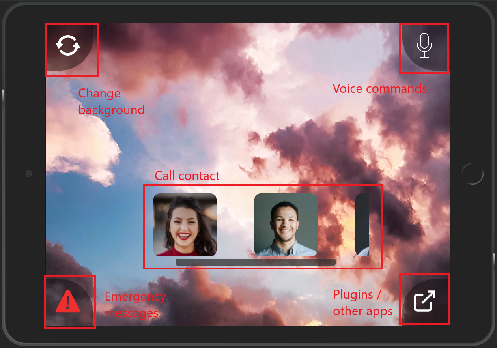
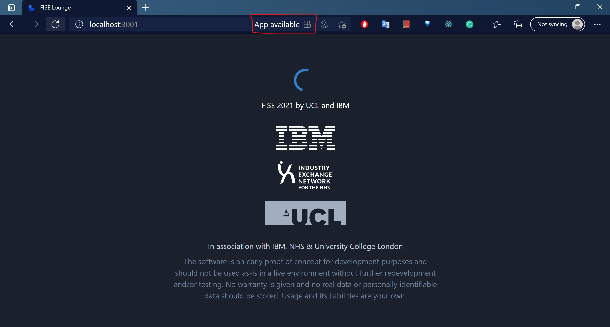
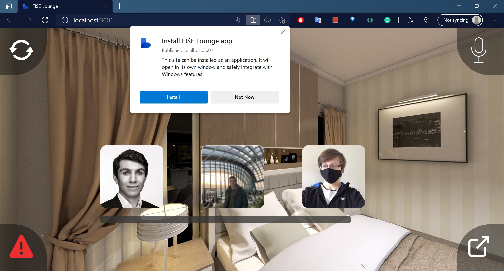
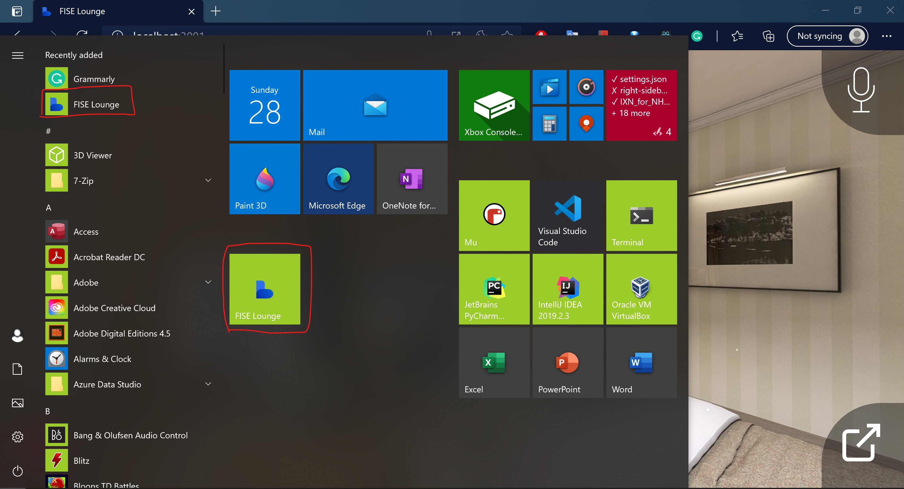

Deployment
All deployment information can be found in our readme - you can find our github page at the bottom of this page - and or in the following documents,
Deployment & Installation. We recommend using docker as it is the easiest way to install all FISE projects at once locally.
Deployment & Installation - PDF
Deployment & Installation - HTML
Docker installation if you do not have it installed
Docker Installation - PDF
Docker installation - HTML
User manual
Dashboard - This page is for an administrator i.e. a grandson or friend
If you have deployed your app locally (main method of running this app), i.e. with docker, you'll find this page on localhost:3000.
- 'Add a new user' and select your privacy settings.
If you choose to enable cloud services all voice commands will run via IBM Watson.
If you do not enable cloud services all voice commands will run via FISE AskBob. - You can now add contacts and upload custom background using an image URL.
- Now copy the one-time-code and enter the app.
App - This is the main app that will be used by i.e. elderly
If you have deployed your app locally (main method of running this app), i.e. with docker, you'll find this page on localhost:3001. If in production without docker you might find it at localhost:5000.
We highly recommend that you have this app installed to your device as this makes the website more accessible. A guide on how to do this can be found in the bottom of this page.
- Enter the app by using the one-time-code. This code will be cached so that you do not need to enter it each time you log in.
- Press on a contact to video-call them. This will send an email invite (and sms if phone number was provided) with a link for them to join the call.
- Press the top-left icon to change the background.
- Press the bottom-left icon to record and send an emergency message.
- Press the bottom-right icon to open plugins (i.e. games, news, covid information).
- Press the top-right icon to do voice commands:
Default voice commands are "change background" and "call [contact]". If you want other voice commands you need to disable cloud features so that it runs via FISE AskBob. You can find a list of all FISE AskBob and FISE concierge commands in their documentation, or our documentation above.
Installing the PWA app
1. "App available" will be displayed
2. "Install FISE Lounge app" will pop-up, press install.
You can now find the app in your home menu
Extra material
Example of full lightouse tests
L1
L2
L3
L4